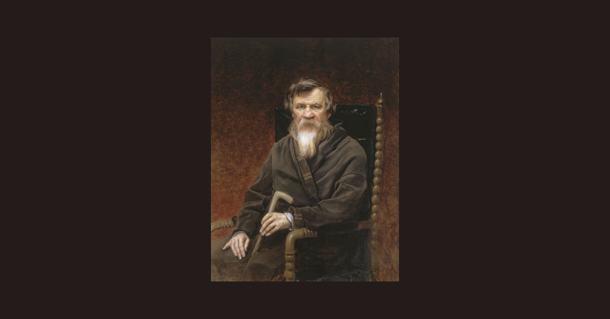
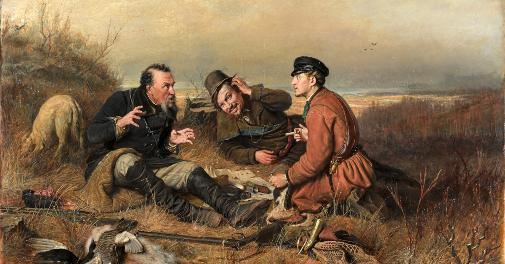
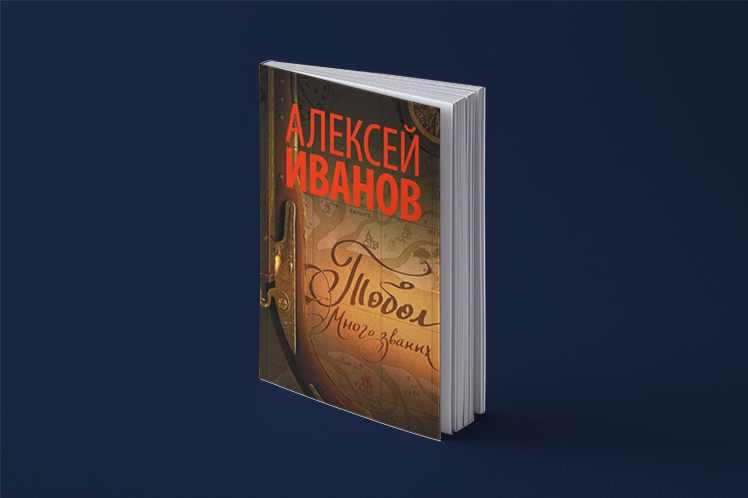
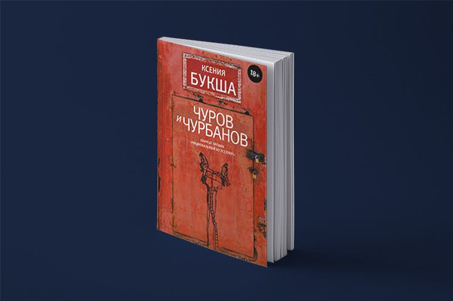

<!DOCTYPE html>
<html prefix="og: http://ogp.me/ns#"></html>
<head>
  <meta charset="utf-8"/>
  <meta name="viewport" content="width=device-width, initial-scale=1.0"/>
  <meta property="og:url" content="http://chernotrop.reviews/default"/>
  <meta property="og:type" content="article"/>
  <meta property="og:title" content="Чернотроп ⚒︎ Русский реализм"/>
  <meta property="og:description" content="Скрещиваем русскую реалистическую прозу с современностью"/>
  <meta property="og:image" content="http://chernotrop.reviews/img/default-preview.jpg"/>
  <meta property="og:image:width" content="1200"/>
  <meta property="og:image:height" content="600"/>
  <link href="https://fonts.googleapis.com/icon?family=Material+Icons" rel="stylesheet"/>
  <link rel="stylesheet"/><!-- Yandex.Metrika counter --> <script type="text/javascript" > (function(m,e,t,r,i,k,a){m[i]=m[i]||function(){(m[i].a=m[i].a||[]).push(arguments)}; m[i].l=1*new Date();k=e.createElement(t),a=e.getElementsByTagName(t)[0],k.async=1,k.src=r,a.parentNode.insertBefore(k,a)}) (window, document, "script", "https://mc.yandex.ru/metrika/tag.js", "ym"); ym(56951962, "init", { clickmap:true, trackLinks:true, accurateTrackBounce:true, webvisor:true, trackHash:true }); </script> <noscript><div></div></noscript> <!-- /Yandex.Metrika counter -->
  <title>Чернотроп ⚒︎ Русский реализм</title>
<link href="./css/style.bundle.css" rel="stylesheet"></head>
<body class="body_dark">
  <header class="header header_dark">
    <div class="header__logo">
      <div class="logo logo_dark"><a class="logo__link" href="/">ЧЕРНОТРОП</a></div>
    </div>
    <nav class="header__menu"><a class="menu-item menu-item_active" href="index.html" target="blank">главная</a><a class="menu-item" href="contacts.html">контакты</a><a class="menu-item" href="http://ttttt.me/blacktrope" target="blank">telegram-канал</a>
    </nav>
    <div class="header__menu_mobile" id="modeValue"><a href="menu.html">
        <svg xmlns="http://www.w3.org/2000/svg" width="24px" height="24px" viewBox="0 0 24 24">
          <path d="M0 0h24v24H0z" fill="none"></path>
          <path class="icon_white" d="M3 18h18v-2H3v2zm0-5h18v-2H3v2zm0-7v2h18V6H3z"></path>
        </svg></a>
    </div>
  </header>
  <div class="wrap">
    <div class="content">
      <div class="pagination"><a class="pagination__year pagination__year_active" href="index.html">2020</a><a class="pagination__year" href="2019.html">2019</a><a class="pagination__year" href="2018.html">2018</a>
      </div>
      <div class="articles-2020">
        <div class="articles-2020__row-sb"><a class="article100_gazdanov article100" href="gazdanov.html">
            <div class="article100__content">
              <h3>Наблюдатель за поражёнными</h3>
              <p>Артём Сошников рассказывает о незаслуженно забытом писателе-эмигранте Гайто Газданове и предлагает читателям один из возможных путеводителей по его романам</p>
            </div></a>
        </div>
        <div class="articles-2020__row-sb"><a class="article50" href="pogodin-stories.html">
            <div class="article50__img"></div>
            <div class="article50__content">
              <h3>Любовь и горе в прозе Михаила Погодина</h3>
              <p>Страдания крестьян, протофем-экшн и невозможность любви — в шести рассказах бывшего крепостного, доросшего до тайного советника Николая I</p>
            </div></a><a class="article50" href="rest-01.html">
            <div class="article50__img"></div>
            <div class="article50__content">
              <h3>Привал, сезон первый</h3>
              <p>Десять недель мы советовали вам по одному реалистическому рассказу, достойному внимания. Пора подвести итоги</p>
            </div></a>
        </div>
        <div class="articles-2020__row-sb"><a class="article50" href="ivanov-tobol.html">
            <div class="article50__img"></div>
            <div class="article50__content">
              <h3>1430 страниц равнодушия</h3>
              <p>Почему, несмотря на хорошо проделанную работу, дилогию Алексея Иванова дочитают не все</p>
            </div></a><a class="article50" href="buksha-churov-i-churbanov.html">
            <div class="article50__img"></div>
            <div class="article50__content">
              <h3>Попытаться стоило</h3>
              <p>Ксении Букше снова не покорился сюжет, но прежние таланты остались при ней</p>
            </div></a>
        </div>
        <div class="articles-2020__row-fs"><a class="article50" href="how-dare-idiot.html">
            <div class="article50__img"></div>
            <div class="article50__content">
              <h3>Да как ты смеешь?! «Идиот»</h3>
              <p>Князь Мышкин — герой волны неоромантизма, которая скоро придёт в Россию. Но сам роман читать не будут</p>
            </div></a>
        </div>
      </div>
    </div>
  </div>
<script type="text/javascript" src="./js/bundle.js"></script></body>